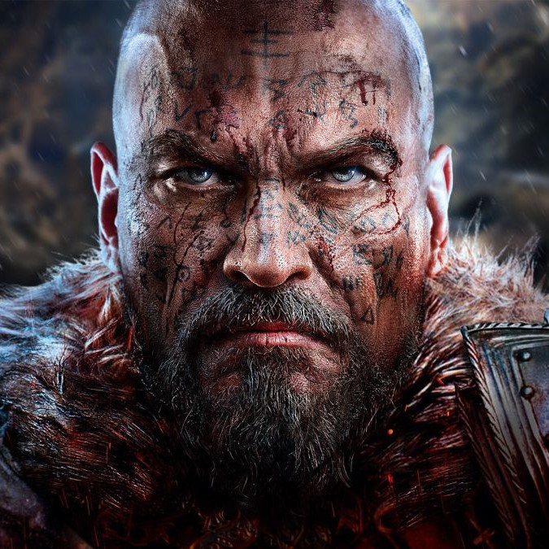
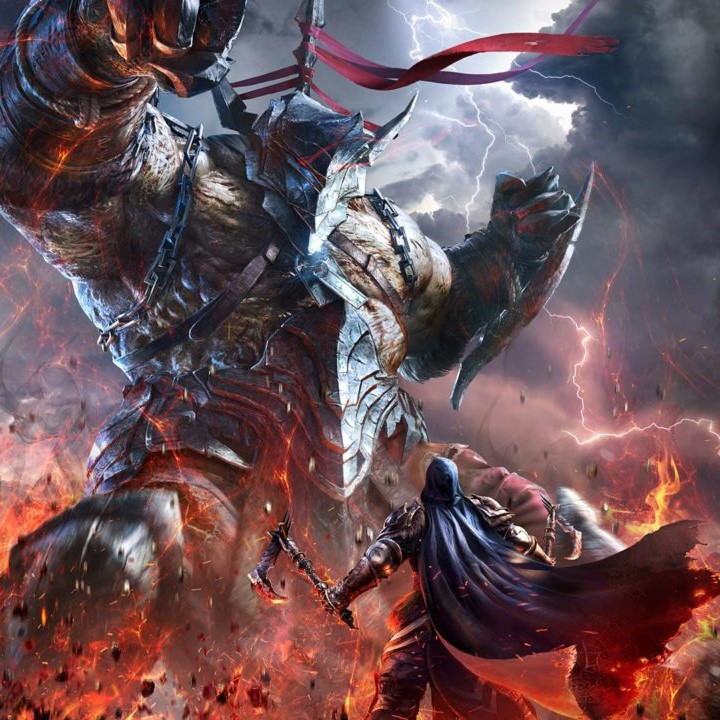
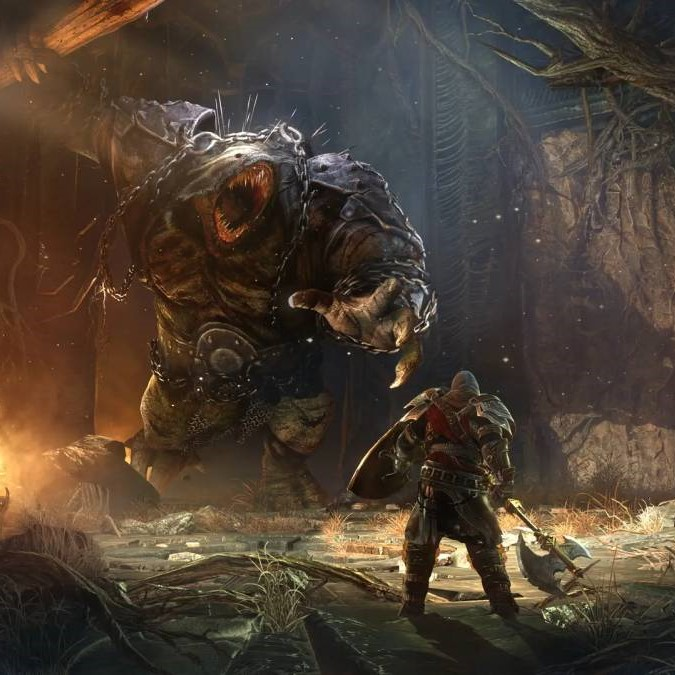

Lords of the Fallen II - Boss Fights - Unreal Engine



Lords of the Fallen II is AAA console game being developed in UE5. It is third-person action role-playing game containing a slow tactical approach to close-quarters combat gameplay, with difficult enemies and locations to overcome, while learning from their encounters.
I worked in this project as a developer using UE4/5 to implement multiple boss-fights. The main systems I used during this project, include:
- Gameplay tags.
- Gameplay Ability System with Gameplay Effects and Gameplay Abilities.
- AI and Behavior Trees.
- Blueprints.
- Animation Blueprints.
- Animations and montages.
- Custom system to send notifications during the melee fights(Damage windows).